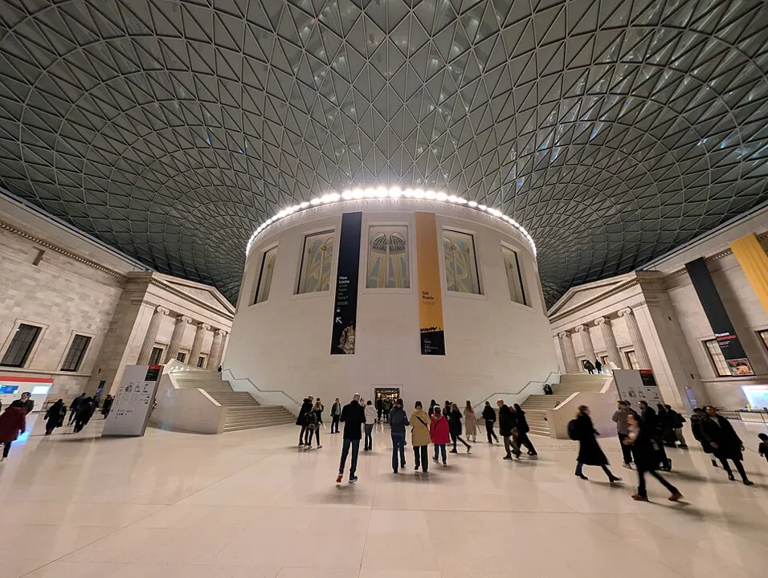

D1・09/08 週二
桃園出發・抵達倫敦
桃園 → Heathrow → 飯店
查看當天行程 → 今晚住哪？Hilton Garden Inn London Heathrow Airport地址與導航 →2026・一起去英國
09/08–09/15・行程時間皆為英國當地時間
出發前先看 D1；自由時間先試算 D2。也可在上方選日期。
D1・09/08 週二
桃園 → Heathrow → 飯店
查看當天行程 → 今晚住哪？Hilton Garden Inn London Heathrow Airport地址與導航 →D2・09/09 週三
Heathrow → Cambridge → Coventry
查看當天行程 → 今晚住哪？Holiday Inn Coventry M6 Jct 2地址與導航 →D3・09/10 週四
Coventry → Warwick → Coventry
查看當天行程 → 今晚住哪？Holiday Inn Coventry M6 Jct 2地址與導航 →D4・09/11 週五
Coventry → Oxford → Bicester → London
查看當天行程 → 今晚住哪？Park Plaza London, Park Royal地址與導航 →D5・09/12 週六
Park Royal → Leavesden → London
查看當天行程 → 今晚住哪？Park Plaza London, Park Royal地址與導航 →D6・09/13 週日
Park Royal → Westminster → Wembley
查看當天行程 → 今晚住哪？Park Plaza London, Park Royal地址與導航 →D7・09/14 週一
Park Royal → Buckingham Palace → Heathrow
查看當天行程 →今晚搭機返台，前往機場前請確認護照與行李。
D8・09/15 週二
CI-82 → 桃園
查看當天行程 →18:05 抵達桃園，祝平安到家。
09/08 出發・09/15 回家
